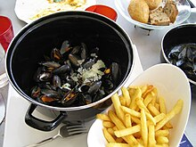

Belgian cuisine is widely varied among regions, while also reflecting the cuisines of neighbouring France, Germany and the Netherlands. It is characterised by the combination of French cuisine with the more hearty Flemish fare. Outside the country, Belgium is best known for its chocolate, waffles, fries and beer. Though Belgium has many distinctive national dishes, many internationally popular foods like hamburgers and spaghetti bolognese are also popular in Belgium, and most of what Belgians eat is also eaten in neighbouring countries. "Belgian cuisine" therefore usually refers to dishes of Belgian origin, or those considered typically Belgian.
